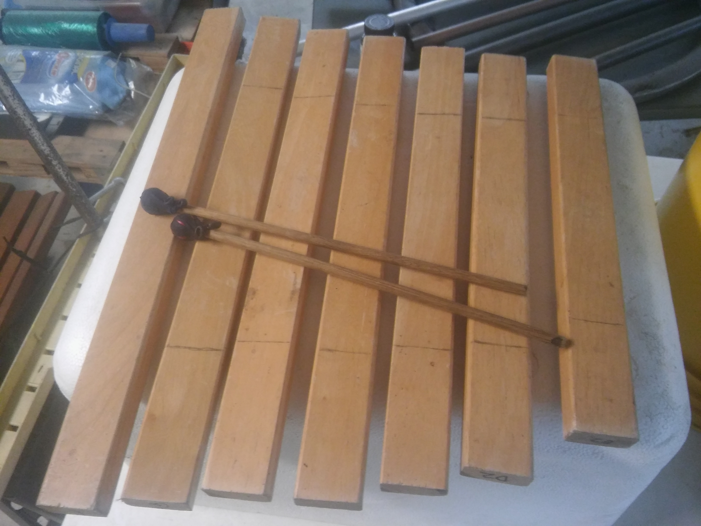

Music | Maintenance | Cooking | Code
Drum triggers, piezos, DIY ekit (fail?), and converting Rock Band pads
Four Layered percussion piece ideas
"Repurposed Percussion" Drum Circle at Barcamp
Cajon (as guitar accompaniement)
cajon clinic at Bside Vintage
Cajon/shakers to emulate drumkit talk"Fruity Loops", Caustic, LMMS -synths, samplers, sequencers, and such
neither proud nor ashamed
A simple python/Flask based web app for calculating the node points on windchimes, xylophnes, etc.
Wind Chime CalculatorGarden Patch Match
Tuesdays are Terrible
ShareShack
functional version at pythonanywhere.com, thought i remebered the Toronto tool library offering a monthly software as a service type subscribtion
Surviving Single / Grocery Cost Calculator
Cooksmarts